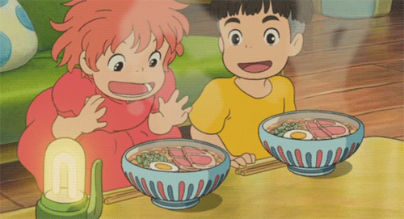

Back Home
Ramen
from Ponyo

Description
In the movie, a five-year-old boy named Sosuke has a fateful encounter upon a
beautiful goldfish trapped in a
bottle on the beach and upon rescuing her, names her Ponyo.
She's no ordinary goldfish but rather the
daughter
of a masterful wizard and sea goddess.
She falls in love with Sosuke and wants nothing more to spend the
rest of
her days with him
as a human. But before they embark on a strange adventure of a lifetime to save the world
and
fulfill Ponyo's dreams of becoming human, they gotta have some delicious ramen!
Ingredients
- 1 package of Nissin Chicken Instant Ramen
- 400ml boiling water
- 1 slice of cooked ham cut in half (use thick cuts if available)
- 1/2 hard boiled egg
- chopped green onion
Steps:
- Start by boiling the water in a kettle or pot over the stove.
- Place the dried instant noodles in a ramen bowl or bowl of your choice. When the water comes
to a
rolling
boil, pour carefully over the noodles and cover the bowl. Set and start your timer
for three minutes.
- After the first minute, quickly open the cover, shake the noodles to separate and then arrange
the
cooked
ham, boiled egg, and green onion over the noodles. Cover again and wait until the timer beeps.
- Enjoy with your favorite enchanted goldfish friend before embarking on an adventure!
Check out other Ghibli Recipes: